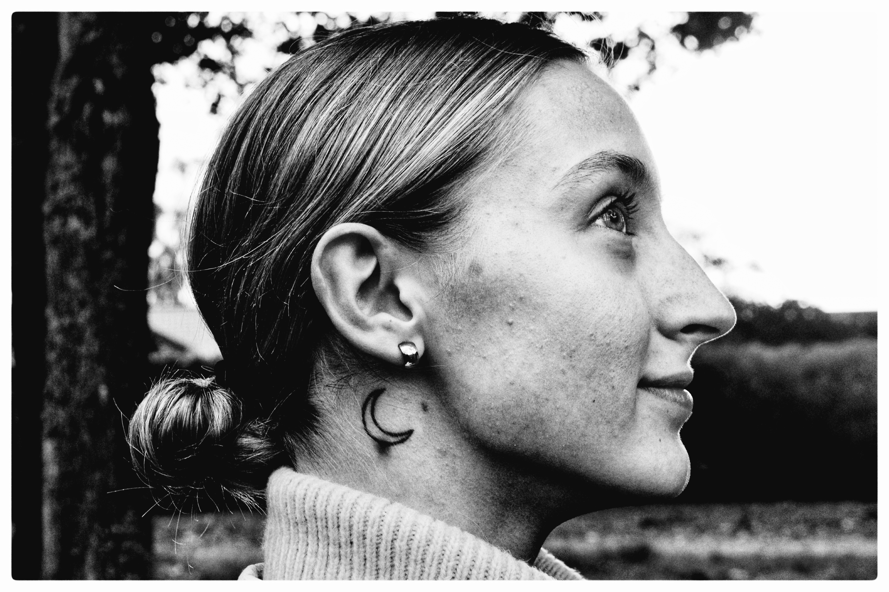
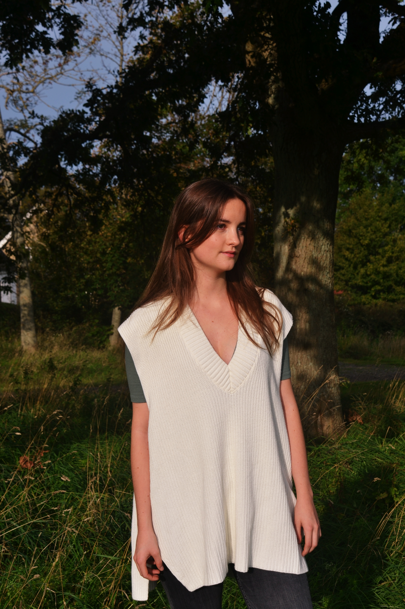

01 — Portrait

02 — Portrait

03 — Portrait

04 — Portrait

05 — Portrait
Exploring people, places, cultures and everyday life through photography. A visual journal of places and moments that inspire me.
01 — Portrait

02 — Portrait
03 — Portrait

04 — Portrait
05 — Portrait
I am a freelance photographer interested in documenting everyday life, landscapes, people and cultures. Through my photographs, I try to capture the untold stories.